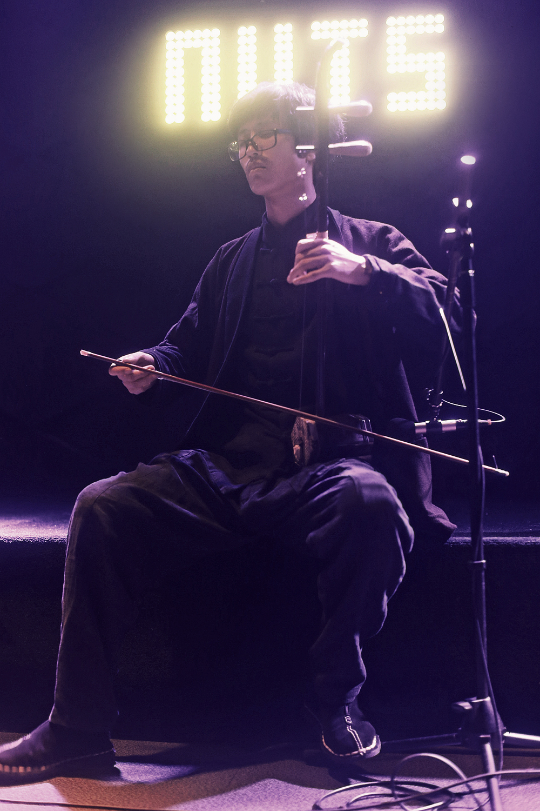
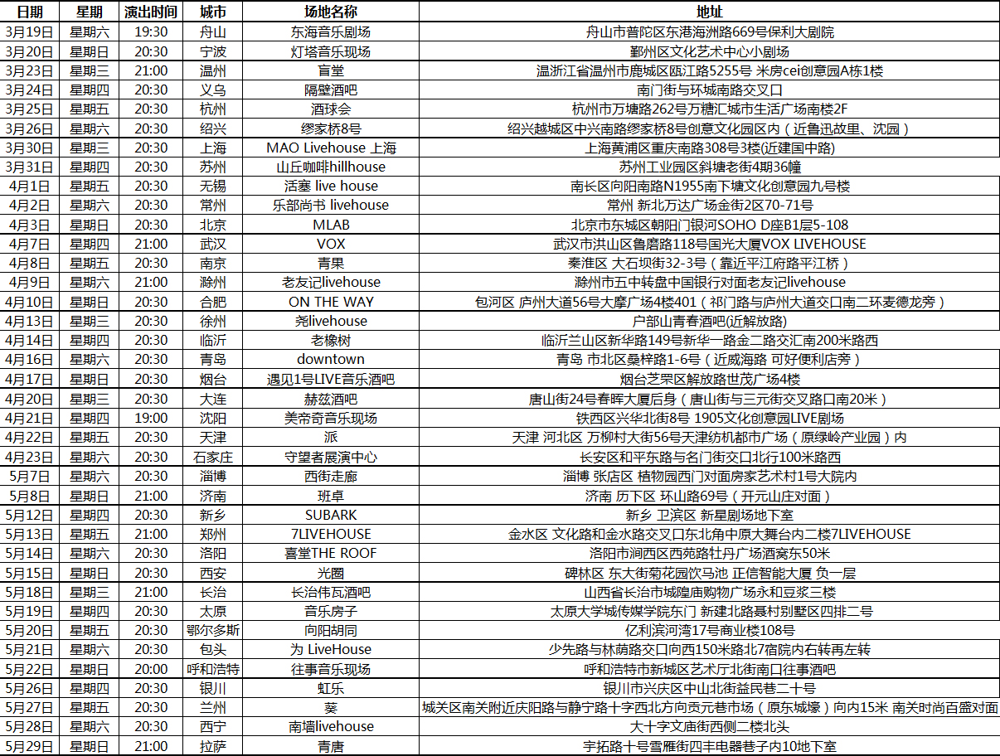

欢迎关注badboy官方微信服务号，享受会员服务

购买必读:
- 1、您购买的均为电子票，无实体发货。
- 2、请您在拍下商品后的十五分钟内付款，逾期将取消未付款订单。/li>
- 3、电子票入场方式：持购票时所填号码相对应证件，现场验证入场。
- 4、鉴于文体演出票品特殊性，一旦票品售出，不支持无理由退换。（因不可抗力因素导致演出取消或延期除外）。
- 5、购票咨询热线：******* 咨询邮箱：tickets@badboy.com
- 6、购买前请确认您所购买的演出场次，付款后将无法更改。
- 7、入场者信息可在演出开始两天前修改（仅限1次），修改请慎重。学生票无法修改入场人信息。
- 8、单张身份证只可以购买一张音乐节门票。（一张概念：预售单日票、学生票、早鸟通票、预售通票可分别购买一张）。
尧十三全国巡演征程再启
“飞船，宇航员”巡航北纬30°以北36城
冬去春来，尧十三的民谣“飞船”将于2016年3月再次启航。
东起舟山，西至拉萨，北纬30°线横贯中国大陆，以此二城为首尾端点，尧十三“师徒”三人此番将巡航北纬30°线以北的36座中国城市，场次数量较去年“飞船，宇航员”南方巡演翻倍——此等规模，堪称2016中国民谣乐坛的开年大事。
去年10月20日，尧十三首张专辑《飞船，宇航员》在乐迷的千呼万唤之下终于问世，随之启程的巡演一改民谣弹唱单枪匹马的既定套路，“飞船三重奏”呼应专辑的多元化曲风，以恰到火候的实验性手法玩转多种非常规乐器，最大程度还原专辑听感的同时，也悄然松动着人们对民谣音乐的固有认知和聆听惯性——现场大合唱自不必说，但走出现场，你心里那句“原来民谣也可以是这样”才是最珍贵的收获。

所以不难理解，去年当许多南方城市的乐迷困于场外感叹来晚一步之时，还有更多人在北方望眼欲穿。所幸这次不用等太久，从海滨到高原，这艘飞船将跨越万里江山，以才华为燃料，以纬度丈量雄心，以36个夜晚的聚散，执拗地表达我们对一种音乐的爱，对一种更富灵性与人性的生活的渴求。
众所周知，北纬30°线串联着这颗星球上最壮观的地理奇观、文明奇迹，以及种种神秘无解的离奇事件。是巧合抑或注定，这次北纬30°以北巡演激荡着尧十三的胸怀和想象，他向每一个冒险者发出登船邀请，向音乐的未知之境点火启航！
